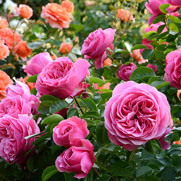

INFORMACION SOBRE FLORES Y CURSOS DE JARDINERIA::
Una flor típica consta de cuatro verticilos, cáliz, corola, androceo (estambres) y gineceo (pistilo).
Una flor es la parte de la planta encargada de la reproducción. Su estructura contempla un tallo corto y un cúmulo de hojas modificadas que protege a las células sexuales y asegura la formación de nuevas semillas. Las flores tienen colores llamativos para atraer a los agentes polinizadores, como las abejas o las mariposas. La distribución de sus pétalos también cumple esta función. Muchas especies florales generan aromas agradables para el olfato humano, como las rosas o la lavanda. Ofrecer habilidades prácticas sobre la producción de ornamentales a nivel doméstico. Los participantes aprenderán a reproducir y cultivar sus propias plantas, mediante el reconocimiento de las plantas de sombra, semisombra y sol, sustratos, herramientas, medios de reproducción, materiales básicos, época de siembra, control de plagas y enfermedades.
ESTO ES UNA IMAGEN CON LINK WEB

ESTO ES UNA IMAGEN LOCAL

ESTO ES UNA IMAGEN LOCAL CON TAMAÑO

ESTO ES UNA IMAGEN LOCAL
Numeros del 1 al 5 sin orden
Numeros del 1 al 5 con Orden
😁 ✅ 🌟
CALIDAD 🌟 🌟 🌟 🌟
| Curso | Costo US$ | Duracion | Profesor | Institucion | |||||
|---|---|---|---|---|---|---|---|---|---|
| Cuidado Básico de las Plantas | $5 | 1 MESES. | MARYSOL BRITO. | Brito Tecnology | |||||
| Fumigación | $5 | 1 MESES. | MARYSOL BRITO. | Brito Tecnology | |||||
| hidroponía | $5 | 1 MESES. | MARYSOL BRITO. | Brito Tecnology | |||||
| Rosas | $5 | 2 MESES. | MARYSOL BRITO. | Brito Tecnology | |||||
| La poda, fertilización, plagas y enfermedades en las Rosas | $5 | 3 MESES. | MARYSOL BRITO. | Brito Tecnology | |||||
| Manejo de agroquímicos | $5 | 2 MESES. | MARYSOL BRITO. | Brito Tecnology |